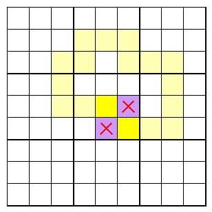
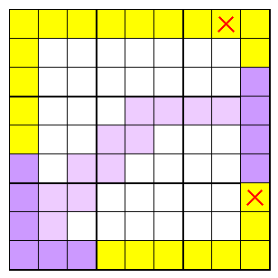

First secret
Attempting to connect two cells of one colour isolates the cells of the other colour.
Second secret
Attempting to connect border blocks of one colour isolates the border blocks of the other colour.
Third secret

The boundary between the two colours can form a single loop, corresponding to all the border cells being the same colour.
More than one loop would imply two separated blocks of the same colour, breaking the connectivity requirement.
The boundary may alternatively end on the border in two places, dividing the border into two blocks.
More than one line, or a line and a separate loop, would imply separated blocks of the same colour, breaking the connectivity requirement.
The boundary visits each point where 4 cells meet, once each.
Passing through twice implies a checkerboard pattern as ruled out by the first secret.
Not passing through implies all four cells of a 2x2 are the same colour, which is forbidden by the rules.
The points where 4 cells meet can be coloured alternately white and black, checkerboard fashion.
Whereever the boundary moves, it must pass alternately through white and black points.
Depending on the number of dots, parity considerations limit where the boundary can emerge onto the border.
m x n grids
m or n odd
If either edge contains an odd number of cells, the number of white and black dots is equal, and their total number is even.
The boundary visits a white dot first and a black dot last.
The boundary can form a closed loop.
Or, the boundary meets the border in two places, joining from different coloured dots.
Counting between these places, an odd number of edge cells are passed.
m x n grids
m and n even

If both edged have an even numbder of cells, the number of white dots exceeds the number of black by 1, and their total number is odd.
No closed loop is possible.
The boundary must meet the border, joining from white dots both times.
Counting between these places, an even number of edge cells are passed.